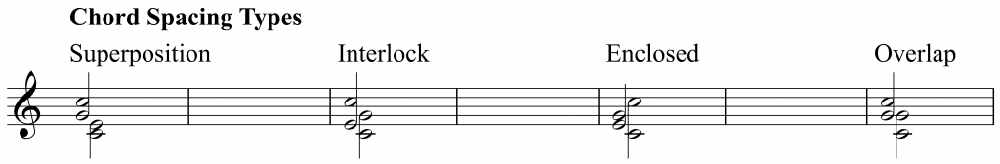
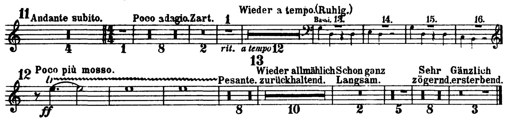
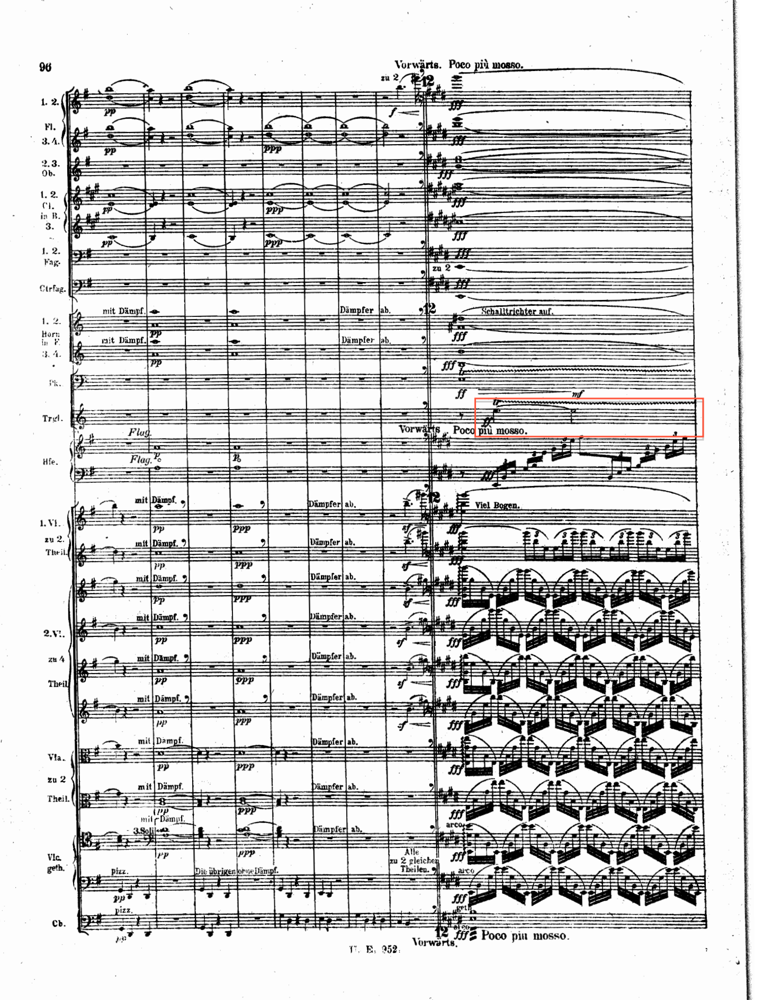

Open Music Theory：繁體中文版
配器法的核心原則
重點整理
- 「同時」，或說「縱向」的組合：和弦音的配置、旋律線的重複配置，以及織體的安排。
- 「先後」，或說「橫向」的組合：例如管弦樂漸強的處理。
查看英文原文
Key Takeaways
- “simultaneously” (or “vertically” if you prefer) for voicing chords, doubling melody lines, and handling texture;
- “successively” (or “horizontally”) for effects like orchestral crescendos.
同時發聲的組合：縱向
融合，還是不融合……這正是「同時發聲」的配器問題。對多數調性音樂的配器者而言，預設答案相當明確：「要融合！」
查看英文原文
Simultaneous (Vertical) Combinations
To b(lend) or not to b(lend) … that is the question … for “simultaneous” orchestration. For most tonal orchestrators, the default answer is a very clear “yes, blend!”
和弦音的配置
全奏配器有個實用的經驗法則：把每個樂器組都當作能獨立成立的整體，藉此促成融合。這適用於木管、銅管、弦樂等大組；在編制較大、同類樂器人數較多的樂團中，也往往適用於長笛組等較小的分組。對每一組，都可以運用四部和聲所學的原則。沒錯，先前學過的和弦寫作原則仍然適用。具體而言，要考慮：
- 納入所有和弦音，或至少最重要的和弦音。
- 各音重複的數量與突出程度，包括避免把三和弦的三音重複得過多。
- 聲部之間的距離：
- 最密集的配置通常在中音域。
- 低音域仍宜保留較大間距，例如大提琴與低音提琴寫成同音，實際卻相隔八度。
- 較高、約在高音譜號的音域中，仍可採用較小間距。
- 管弦樂總譜最頂端的高音域，往往比其他場合更活躍；到了這些極高音域，通常又以較寬的配置為佳。
不同和弦配置有相應的術語，整理如例1：

- Chord Spacing Types＝和弦配置類型；
- Superposition＝疊置，兩組各占一段音域；
- Interlock＝交錯，兩組音高輪流穿插；
- Enclosed＝包圍，一組位於另一組的內側；
- Overlap＝重疊，兩組共享某個音高。
符桿向上與向下的音，分別代表兩組。
例1。和弦的配置類型。
最適合哪一種，要由音樂脈絡決定。為了讓聲音融合，常採取互相穿插的「交錯」配置，並注意各樂器在不同音域中的強弱差異，使它們平衡。反過來，若想讓每個音呈現不同音色，則可採較寬的間距。[1]
查看英文原文
Voicing chords
As a rule of thumb for tutti orchestration, blend by treating each section as if it were self-contained. This applies to the large sections (winds, brass, strings), and often also to the smaller sub-sections (e.g., flutes) in the case of larger orchestras where there are greater numbers of each. For each section, follow the principles you learned in four-part writing. That’s right, the principles you’ve already learned about chordal writing still apply. Specifically, you’ll need to consider:
- The inclusion of all (or at least the most important) harmonic pitches.
- The number and prominence of each pitch, including avoiding the overdoubling of the third in a triad.
- The gaps between voices:
- We now see the densest packing in the middle.
- Continue to use larger gaps in the bass register (e.g., the octaves given by cello and double bass notated on the same pitch but sounding an octave apart).
- Continue to use smaller gaps higher up in the treble clef range.
- We tend to see more activity in the very highest registers in orchestral scores than in most other contexts; it’s usually best to return to wider spacing in those highest registers.
We have terminology for the different types of chord spacing as summarized in Example 1:
Example 1. Chord spacing types.
Context determines the best choice among these. For a blended sound, we often use integrated “interlocking” voicing, taking care to balance the different strengths of each instrument according to the register; conversely, to achieve a different color for each note, use wider spacing. [1]
旋律線的重複配置
同一旋律線交給多件樂器重複演奏時，要融合音色，同樣需要在樂器與音域之間，找到強度相當、彼此合適的平衡。莫札特第40號交響曲第三樂章的第二段，自第14小節附近起，實際上很像一首二聲部創意曲，是線條融合與平衡的有趣範例。兩條聲部線都分布在三個八度中，並同時由木管與弦樂演奏。
這種預設做法，當然不是物理學中的重力定律。和處理其他音樂要素一樣，作曲家會為了創作效果，偏離以融合為主的寫法。舒伯特第8號《未完成》交響曲第一樂章，或許是最著名的特殊同音配置例子：第13小節的第一主題，由一支雙簧管與一支豎笛同度演奏，音色相當獨特。有些評論者把它視為失誤，但作者認為，這很可能是舒伯特刻意營造不安感，恰好符合樂曲情緒的選擇。它也與後面的副題段落形成對比：第42小節先出現融合的豎笛與中提琴三度和聲伴奏，接著由大提琴唱出主題。
查看英文原文
Doubling lines
The approach to blending in doubling lines again involves finding a compatible balance of (equally strong) instruments and registers. The second part (m.1 4ff.) of Mozart 40/iii is effectively a two-part invention and an intriguing example of blended, balanced lines. Both of the two parts are played in each of the three octaves, and by both winds and strings.
As always, this default is not a law like that of gravity in physics; composers will diverge from this blended practice for creative and compositional effect in just the same way that they do with any other parameter. Perhaps the most famous example of an odd doubling is provided by Schubert 8/i. The first theme (m. 13) sees the extraordinary doubling of a single oboe and clarinet in unison. While some commentators have seen this as an error, it’s probably deliberate on Schubert’s part as a way of creating an unsettled feel that entirely befits the mood of the music. It also contrasts with a second theme (reh. A, m. 42): a cello theme accompanied by the optimally blended viola and clarinet in thirds.
織體
樂器、音域等選擇，可以支撐並界定更大範圍的織體。例如：
- 複音寫法：往往讓各樂器與樂器組保持平衡、融合，例如賦格，以及剛才討論的莫札特創意曲式段落。
- 旋律加伴奏：把旋律樂器放在最能發揮的音域，通常也像其他音樂場合一樣，放在織體頂端，使它突出；伴奏則可在下列面向形成對比：
- 音色，例如以整個弦樂組伴奏一條木管獨奏旋律。
- 音域，如前面所述。
- 織體，例如減少節奏活動，或採不同類型的節奏。這和複音音樂中常見的互補節奏相似：兩種情況都希望讓多個要素同時存在，又能清楚區分。
查看英文原文
Texture
The choice of instruments, register, and more can help support and define the wider texture. For instance:
- Polyphonic writing: Tends to see instruments and groups balanced and blended. Examples include fugues and the Mozart invention just discussed.
- Melody and accompaniment: Foregrounds the melodic instrument by placing it in its best range, often at the top of the texture (as in other contexts), and with other accompanimental parts contrasting in:
- Timbre, accompanying a solo woodwind line by full strings, for instance.
- Register (as discussed).
- Texture, with less or a different kind of rhythmic activity. This is similar to the kind of complementary rhythmic patterns you often find in polyphonic music: in both cases, we’re trying to have more than one element at once, but keep them noticeably distinct.
先後接續的組合：橫向
這裡從兩種時間尺度看接續的安排：個別音符的小尺度，以及整個段落的大尺度。
首先再強調一次：你學過的聲部進行原則，仍然適用。沒錯，這句話會反覆出現。大多數時候，看似複雜的管弦樂總譜，都能約化成二、三或四個聲部，重複配置清楚一致，聲部進行也符合相應規範。
安排先後相接的段落時，應答式對奏（antiphony）是很常用的方法，可以分配材料、製造音色變化，並標示曲式。它可以是整塊材料從弦樂交給木管，這在巴洛克時期的早期管弦樂總譜中很常見，也可以是更細膩的效果。例如，看看葛利格《皮爾金》組曲中〈山魔王的宮殿〉的第一頁：
曲調重複時，主要變化就是應答式對奏：材料從弦樂交給木管。旋律、伴奏與音域都維持相同。之後，隨著音域向上擴張，這個弦樂與木管交替的原則也延伸到高聲部。接下來仔細看看這段漸強。
查看英文原文
Successive (Horizontal) Combinations
We’ll look here at forms of succession on two timescales: at the level of individual notes (small scale) and of whole sections (large scale).
Firstly, once again, everything you’ve learned about voice-leading still applies. (Yes, this will be a recurring mantra.) Most of the time, it will be eminently possible to reduce apparently complex orchestral scores down to a two-, three-, or four-part texture with clear and consistent doublings and with “correct” voice-leading.
In handling successive sections, antiphony is a highly favored method for distributing material, creating timbral variety, and articulating the form. This can take the form of whole blocks of material being passed from strings to winds (common in early orchestral scores of the Baroque era), or of more subtle effects. For instance, look at the first page of “In the Hall of the Mountain King” from Grieg’s Peer Gynt suite:
At the repeat of the tune, the only variation is antiphony (strings-to-winds). The material (both tune and accompaniment) and register are identical. Later, this strings-to-winds principle continues to the upper voices as the register expands upward. Let’s take a closer look at that crescendo.
漸強
要寫出有效果的管弦樂漸強，可以使用許多手段。除了直接標示力度，還可以：
- 增加樂器。往往由聲響較「輕」的樂器逐漸加到較「重」的樂器，大致是弦樂、木管、銅管、打擊樂，例如葛利格譜中的排練記號A。
- 擴張整體音域。常從低音向上，或從中央向兩端擴張，例如葛利格譜中的A與B。
- 增加音值種類。加入較長的持續音，也可以加入較短的音、顫弓或其他快速反覆，譬如藉由同音反覆達成，例如葛利格譜中的B。
看看葛利格譜中的排練記號B，留意以下兩點：
- 編制與音域：此時幾乎動用了全團與完整音域，只保留短笛，等到稍後的高音C♯才加入。依本章所附總譜，短笛在B起點八小節之後進入；到了C又退出，在D重新加入，產生類似效果。同樣地，最後一頁在最末的fff和弦之前，先讓最底層低音樂器暫時退出，形成一段p的對比。
- 更豐富的音值：A處先由中提琴引入、落在弱拍上的「十六分、十六分、八分」伴奏音型，此時成為焦點，增加節奏密度。高音弦樂以十六分音符同音反覆演奏主題，加上定音鼓滾奏，又進一步強化這個效果。另一方面，法國號加入較長的二分音符，為先前較斷奏的伴奏增添持續性。
順帶一提，由較輕到較重的樂器順序——弦樂、木管、銅管、打擊樂——也與整體演奏時間有關：弦樂通常奏得最多，打擊樂最少。部分原因很實際：若叫銅管樂手照弦樂聲部那樣一路演奏，恐怕會累倒，因為演奏時間太長，中間休息太少。實務上合適的選擇，與音樂上合適的選擇，常常就這樣相互配合。
查看英文原文
Crescendos
We have a range of tools at our disposal for achieving an effective orchestral crescendo. Apart from mere dynamic markings, we can:
- Add instruments, often moving from the “lightest” to “heaviest” instruments: broadly, strings-wind-brass-percussion (e.g., Grieg rehearsal mark A).
- Expand the overall range, often upward from the bass or outward from the center (e.g., Grieg rehearsal marks A and B).
- Diversify the note values used, adding sustained, longer notes and/or tremolo, shorter ones, perhaps through note repetitions (e.g., Grieg rehearsal mark B).
Take a look at rehearsal mark B in the Grieg, and notice the:
- Forces and register: We now have the full orchestral and full register in use except for one instrument, the piccolo, which is reserved for the top C♯, four measures later. The piccolo is removed at rehearsal mark C and reintroduced at rehearsal mark D for a similar effect. Likewise, the final page briefly removes the bass for the piano passage before the final fff chord.
- Wider range of note values: The accompanimental figure (16th-16th-8th on the weak beats), first introduced by the viola part at rehearsal mark A, has now become focal, adding rhythmic density to the score. This is further enhanced by the upper strings playing the theme with repeated (sixteenth) notes and the timpani roll. Conversely, the horns introduce longer (half) notes, lending a more sustained sound to the previously staccato accompaniment.
As an aside, it’s worth noting that moving from lightest to heaviest instruments (strings-winds-brass-percussion) is related to overall playing time: the strings generally play the most, the percussion the least. This is partly for pragmatic reasons: brass players would keel over from exhaustion if you had them play the string parts—there’s just too much playing time and not enough resting time in between. You’ll find that the best choices for pragmatic reasons and musical ones often go together in this way.
先保留某種音色，等待效果最好的時刻
打擊樂聲部最清楚地展現了「保留音色以待效果」的做法。打擊樂手的一項重要能力，就是數過數百小節休止後，在關鍵高潮準確地一擊登場。以下是馬勒第4號交響曲第三樂章的三角鐵聲部節錄。在排練記號12展開的高潮段落中，鈸的重擊凸顯到達感，三角鐵則帶出燦爛的織體，包含前述豐富效果：音域、織體、持續音與音符密度。三角鐵幾乎能穿透各種織體，產生鮮明效果；鐘琴與短笛也很適合擔任這種角色。
譯註來源：馬勒第4號交響曲：鈸分譜，第3頁，IMSLP #961532，Doblinger／Universal Edition版系統

- Flauto／Flöte／Fl.＝長笛；
- Piccolo＝短笛；
- Oboi／Ob.＝雙簧管；
- Clarinetti／Cl.＝豎笛；
- Fagotti／Fag.＝低音管；
- Corni／Horn＝法國號；
- Trombe＝小號；
- Tromboni＝長號；
- Tuba＝低音號；
- Timpani＝定音鼓；
- Violino／Vl.＝小提琴；
- Viola／Vla.＝中提琴；
- Violoncello／Vc.＝大提琴；
- Basso／Contrabasso／Cb.＝低音提琴。
- pizz.＝撥奏；
- arco＝用弓演奏；
- divisi＝分部；
- a 2＝兩人同奏；
- pp＝極弱；
- p＝弱；
- f＝強；
- ff＝很強；
- fff＝極強；
- cresc.＝漸強；
- dim.＝漸弱。
- Andante subito＝突然改為行板；
- Poco adagio＝稍慢；
- Zart＝柔和；
- Wieder a tempo (Ruhig)＝回原速，平靜；
- Bassi＝低音樂器提示；
- Poco più mosso＝稍活躍；
- Pesante＝沉重；
- Wieder allmählich zurückhaltend＝再逐漸收緩；
- Schon ganz langsam＝此時已十分緩慢；
- Sehr zögernd＝非常猶疑；
- Gänzlich ersterbend＝完全消逝；
- rit.＝漸慢；
- tr與波浪線在此表示三角鐵滾奏。
- 多小節休止下的數字表示休止小節數；
- 提示音與排練號另有用途，不可混為同一種數字。

- Flauto／Flöte／Fl.＝長笛；
- Piccolo＝短笛；
- Oboi／Ob.＝雙簧管；
- Clarinetti／Cl.＝豎笛；
- Fagotti／Fag.＝低音管；
- Corni／Horn＝法國號；
- Trombe＝小號；
- Tromboni＝長號；
- Tuba＝低音號；
- Timpani＝定音鼓；
- Violino／Vl.＝小提琴；
- Viola／Vla.＝中提琴；
- Violoncello／Vc.＝大提琴；
- Basso／Contrabasso／Cb.＝低音提琴。
- pizz.＝撥奏；
- arco＝用弓演奏；
- divisi＝分部；
- a 2＝兩人同奏；
- pp＝極弱；
- p＝弱；
- f＝強；
- ff＝很強；
- fff＝極強；
- cresc.＝漸強；
- dim.＝漸弱。
- Ctrfag.＝倍低音管；
- Pk.（Pauken）＝定音鼓；
- Trgl.＝三角鐵；
- Hfe.＝豎琴；
- Vorwärts＝向前推進；
- Poco più mosso＝稍活躍；
- mit Dämpfer＝加弱音器；
- Dämpfer ab＝取下弱音器；
- Schalltrichter auf＝抬高喇叭口；
- Viel Bogen＝多用弓；
- zu 2／4 Theilen＝分成二／四個聲部；
- 3 Soli＝三人獨奏；
- Die übrigen ohne Dämpfer＝其餘不用弱音器；
- Alle zu 2 gleichen Theilen＝全組平均分成兩個聲部；
- Flag.＝泛音。
保留音色的做法，經常用於強奏或高潮，但也有例外。直到作品接近結尾，才讓全新的聲音出現，也能非常有效。德布西《牧神午後前奏曲》或許是最具代表性的例子：古鈸一直到接近尾聲才使用。對本曲而言，這是新的聲響，對當時西方聽眾而言也頗新鮮。關鍵位置在排練記號10，下方錄音約8分56秒；但要體會效果，顯然需要連同較大範圍的上下文一起聽。
查看英文原文
Holding a timbre back for effect
Percussion parts are the clearest indication of the practice of holding a timbre back for effect. One of the essential skills of the percussionist is being able to count hundreds of measures of rest and then come in with a bang at the crucial, climatic moment. Here’s an extract from the triangle part for Mahler 4/iii. At reh. 12, a crash cymbal marks the moment of arrival, and the triangle leads a glorious texture, full of all the rich effects described above (register, texture, sustain, and note density). The triangle is one of those instruments that can be pretty well guaranteed to cut through most any texture and make an impact. The glockenspiel and piccolo are also good in this role.
This holding back of a timbre is very often for loud and/or climactic moments, but not always. For instance, reserving an entirely new sound until near the end of a work can be extremely effective. Perhaps the most iconic example is to be found in Debussy’s Prélude à l’après-midi d’un faune, where the antique cymbal is not used until near the end. (This is a “new” sonority for the piece, and even for Western audiences of the time.) The crucial moment comes at reh. 10, (8’56” in the following recording), but clearly the effect depends on listening to the wider context.
聲部的交接
最後是一種與應答式對奏相互補充的做法：配器者常讓聲部彼此「交接」（dovetailing），把一條連續線條分配給不同聲部。它可以：
- 接近應答式對奏，讓旋律線在聲部之間移動。
- 也可以恰好相反：在單一樂器難以連續演奏時，透過交接維持線條的連貫與整體感。
- 還可以細膩地調整交接方式，使某種節奏輪廓清楚浮現。
看看史麥塔納《莫爾道河》（Vltava）中的效果：
- 開頭兩支長笛彼此交接，在強拍上重疊一音。這樣容易演奏，也能分擔長線條。不過，若圓滑線連到強拍，而不是把該音用斷奏分開，接合原本還可以更無縫；目前的寫法，則兼具流動感與清楚的拍點。
- 豎笛加入時，交接既發生在同類樂器內部，也發生在樂器組之間：長笛繼續原先的方式，豎笛跟進，進一步形成第一長笛加第二豎笛，以及第一豎笛加第二長笛的配對。
- 第36小節弦樂接手這種流動材料時，採取另一種方式：線條仍在弦樂聲部之間分配，但分組把它切成清楚的6＋3＋3，亦即2＋1＋1的節奏比例。此前木管已有一段切分重音的處理。
由此可見，簡單的聲部交接也能變化很多。還可以更細緻，例如拉赫曼尼諾夫第3號交響曲第二樂章排練記號42的下列段落。譜例呈現雙簧管、低音管與小提琴之間密集的交接（可至IMSLP查看總譜，了解這段伴奏的上下文）。這個節奏把四種進入位置都用滿了：每個十六分音符位置都有一個聲部進入。它同時具有：
- 樂器組內部不重疊的交接：木管中是雙簧管或低音管其中一方在奏，弦樂中是第一或第二小提琴其中一方在奏；各組內不會兩方同時奏。
- 樂器組之間錯開的交接：木管音型從每拍的第二、第四個十六分音符開始，小提琴則從第一、第三個位置開始，第一拍之後便形成此規律。
這種織體充分運用了手邊的編制，細節活潑閃動，也給了演奏者值得投入的聲部；後者很重要，卻很容易被忽略。
- 42＝排練記號42；
- Fl.＝長笛；
- Ob.＝雙簧管；
- Cl. in B♭＝B♭調豎笛；
- Bsn.＝低音管；
- Vlns.＝小提琴；
- Vcs.＝大提琴；
- Cbs.＝低音提琴；
- pizz.＝撥奏；
- pp＝極弱；
- p＝弱；
- poco cresc.＝稍微漸強；
- dim.＝漸弱；
- tr與波浪線＝顫音。
兩條小提琴線合寫在同一譜表，以符桿方向區分。
- 圖上沿用Vlns.1標示；
- 正文則分稱第一、第二小提琴，不能單憑這個合寫標籤推算額外樂器人數。
例2。雙簧管、低音管與小提琴聲部之間的交接。
- Bassoons＝低音管；
- Violin I／II＝第一／第二小提琴；
- Viola＝中提琴；
- Violoncello＝大提琴；
- Contrabass＝低音提琴；
- pizz.＝撥奏；
- f＝強；
- 符桿上的斜線表示快速反覆。
第二譜系的4是本節錄內的小節號，並非據此認定原作第4小節。
這是作業供分析的原譜，保留原問題，不另填入解答。
- 關於本主題，可參閱一篇2022年的文章，發表時間甚至晚於本章原先的撰寫：McAdams, Stephen、Meghan Goodchild與Kit Soden。〈A Taxonomy of Orchestral Grouping Effects Derived from Principles of Auditory Perception〉（以聽覺知覺原則為基礎的管弦樂分組效果分類）。Music Theory Online 28（3）。閱讀全文。
媒體來源
- C3 Chord Spacing Types（和弦配置類型）。
- 更多教材中的範例，見Adler（2002，253頁）及Piston（1955，396頁）。↵
查看英文原文
Dovetailing parts
Finally, in an approach somewhat complementary to antiphony, orchestrators will often “dovetail” parts: share a continuous line out between different voices. This can be:
- related to antiphony (the melodic line moves from part to part)
- or the opposite: ensuring continuity/cohesion within a line on instruments for which that would be impractical
- tailored in subtle ways to demarcate a rhythm
Take a look at Smetana’s Vltava to this effect:
- At the opening, the flutes dovetail, overlapping by one note on the downbeat. This is easy to play, and it allows them to share the long line. It could be more seamless, though, by slurring onto the downbeat, rather than separating that note with a staccato. The resultant effect is of a fluid line, but with the beats clearly demarcated.
- When the clarinets enter, we have dovetailing both within and between those subsections: the flute continues as before, the clarinets follow suit, and this leads to further pairs of Fl.1 + Cl.2 and Cl.1, Fl.2.
- The strings take a different approach at their entrance at m. 36. The line continues to be shared out among the string parts, but the groupings break it up into clear 6+3+3 (2+1+1) rhythms. This follows a period of syncopated accents in the winds.
This gives some sense of how much variety can be achieved within the simple dovetail pattern. It can get even more detailed, as in the following passage from Rachmaninoff 3/ii (reh. 42). The example shows the dense dovetailing among the oboes, bassoons, and violin parts. (Click here for scores on IMSLP to see this accompaniment in context). This rhythm saturates the four options: every sixteenth sees the entry of one part. It is both:
- dovetailed within the wind and string sections without overlap: i.e., one or other part is always playing, but never both (oboes or bassoons; violins 1 or violins 2)
- and dovetailed between those sections with winds patterns starting on the 2nd and 4th sixteenths, and violins starting on the 1st and 3rd (after the first beat).
The texture makes great use of the resources at hand, sparkles with detail, and gives the players interesting parts to think about (an important and easily overlooked consideration).
Example 2. Dovetailing among the oboes, bassoons, and violin parts.
- Dovetailing: transcribe the sixteenth-notes part (piano right hand) of Louise Reichardt’s Unruhiger Schlaf (12 Gesänge, no. 6) for two clarinets, dovetailing regularly every quarter or half note. A score is available online here and for download here.
- Look at the extract from Hensel’s Overture in C major below. How does the combination of bassoon and cello relate to topics discussed in this chapter?
Overture in C Major – Fanny Hensel by openmusictheory
- For a recent article on this topic (even more recent than this chapter!), see McAdams, Stephen, Meghan Goodchild, and Kit Soden. 2022. ‘A Taxonomy of Orchestral Grouping Effects Derived from Principles of Auditory Perception’. Music Theory Online 28 (3). https://mtosmt.org/issues/mto.22.28.3/mto.22.28.3.mcadams.html.
Media Attributions
- C3 Chord Spacing Types
- For more textbook examples, see Adler (2002, 253); Piston (1955, 396). ↵